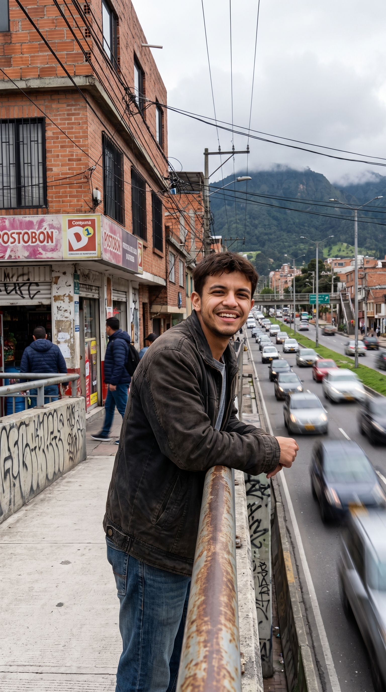
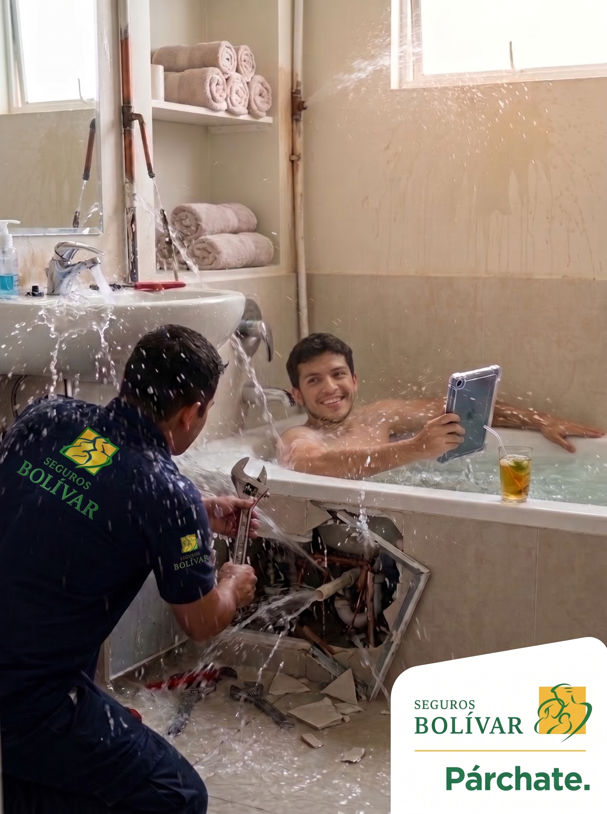
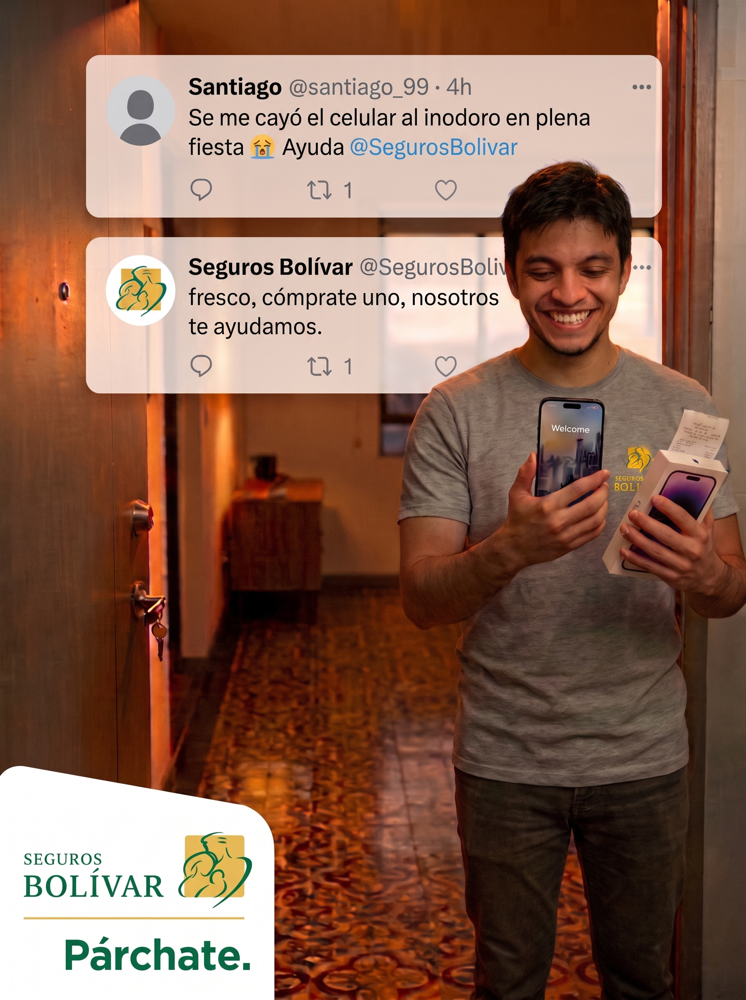

¿Y si los seguros fueran tan fáciles como un parche?
Una campaña diseñada para conectar con quienes desean vivir una vida más tranquila y segura pero evitan las aseguradoras tradicionales.
Conoce a Santiago (User Persona)
Joven de 19-29 años en Bogotá. Sabe que debería tener seguro, pero le da pereza o ansiedad pensar en ello.
Pospone la decisión para "un futuro lejano". Hace scroll rápido si ve anuncios incomodos, molestos o demasiado corporativos. Solo busca seguros cuando ya pasó el susto.
"Eso es para cuando tenga una familia". Siente vulnerabilidad pero no lo admite; le aterra perder el control.
Problemas cotidianos de las personas a su alrededor. En su feed prefiere trucos muy faciles de finanzas, memes, trends, storytimes y contenido para desarrollo personal.
A su familia regañándolo ("deberías tener seguro"). Marcas corporativas con tonos aburridos y lejanos. Anecdotas de amigos que han tenido experiencias negativas porque tuvieron un acciedente y no contaban con una aseguradora.

Santiago, 26 años
Creativo, independiente y siempre en movimiento.
Estrategia "Párchate"
Transformamos los seguros en un servicio cotidiano y relajado. Rompemos el hielo usando humor inteligente, situaciones exageradas pero hiper-relatables y un lenguaje 100% nativo digital.
El ecosistema de contenido visual
Tránsito y Rutas
Soluciones ágiles para imprevistos en la vía sin enredos ni trámites eternos.
Emergencias Wellness
Cobertura inmediata para esos pequeños accidentes de la vida diaria.

Protección de Espacios
Tu vivienda a salvo de cualquier daño o imprevisto.

Kit de Solución
La pieza estelar integrando el tuit de la tragedia y la entrega inmediata de ayudas por parte de Seguros Bolívar.